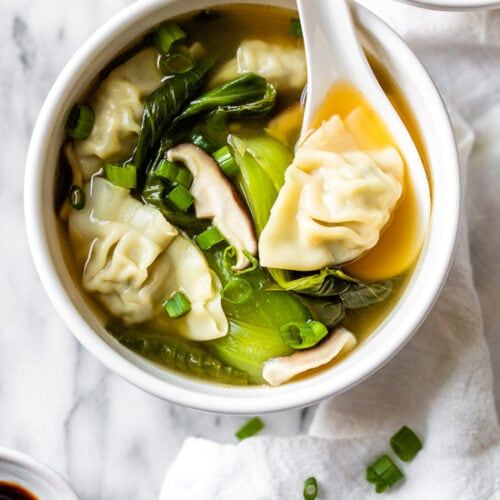

Wonton Soup

Description
If you've ever had store bought frozen wontons or wontons from
a good value Chinese place that probably uses frozen wontons,
you will be amazed how different homemade ones are. The main
difference is the texture of the filling - because homemade
wontons are just made with pure fresh ingredients!
I think wontons are one of those things that many people
don't think to make, assuming they are really tedious and
take ages. But they don't! The wonton filling takes minutes
and wrapping the wontons is quite fast if you use my method!
Ingredients
Wonton Filling
- 50 - 60 wonton wrappers
- 200g lean mince pork
- 200g peeled shrimp
- 1 tbsp grated ginger
- 2 minced shallots/green onions
- 1 tbsp light soy sauce
- 2 tbsp shaoxing wine
- 1/2 tsp salt
- 2 tbsp sesame oil
Broth
- 750ml chicken broth
- 2 garlic gloves
- 20g sliced ginger
- 1.5 tbsp light soy sauce
- 2 tsp sugar
- 1.5 tbsp shaoxing wine
- 1/2 tsp sesame oil
To serve
- chopped scallions
- bok choy
- 100g cooked egg noodles
Instructions
Wontons:
- Rough chop the shrimp into chunks. Not too fine
or into a paste.
- Add everything into a mixing bowl and mix
Wrapping Wontons:
- Lay wonton wrapping on work surface. Use 2
teaspoons of the filling in the middle of
wonton wrapper.
- brush the edges of the wonton wrapper with water
- fold to seal, pressing out excess air
- brush the folded edges with some more water and
fold side corners to the top of the wonton wrapper.
- place wrapped wontons in a container with parchment
paper to prevent sticking.
Cooking/Freezing:
- To cook: bring a large pot of
water to boil. Place wontons in boiling water and
cook for around 4 minutes or until they float. Remove with
slotted spoon and into serving bowl. Ladle broth ontop
- To freeze: freeze uncooked wontons
in an air container. When cooking from frozen, cook for
6 to 8 minutes
Broth:
- place broth ingredients in a sauce pan over high
heat. Add the ends of the scallions in as well.
- place a lid on, bring to a simmer and then reduce to
medium heat and simmer for 5 - 10 minutes to allow
flavours to infuse. Take out ginger and garlic after.
- if you have bok choy, blanch in the soup broth.
Serving Soup:
- prepare noodles by boiling for 5 minutes.
- place cooked noodles in serving bowl with vegetables
and wontons.
- ladle over the soup and enjoy!